The brief
Design and manufacture a metal product
The project goal was to design and manufacture a product made from metal in the Product Realisation Lab.
Concept development
Playful and functional
The goal was to create something both playful and functional. The concept grew from the everyday frustration of misplacing glasses and small jewellery and led to two animal-shaped holders that sit on a desk and conveniently hold items.
An initial prototype was made from play-dough to test proportions, angles, and the distances required for the animals to visually 'wear' the glasses before translating to CAD.
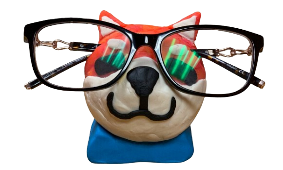
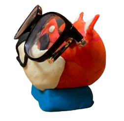
CAD modelling
Designing for sand casting
Each critter consisted of two separate bronze or aluminium components, a top half and a base, designed so one piece rests atop the other. The top piece holds the user's glasses, while the bottom piece can hold small trinkets, while maintaining stability when assembled.
The initial CAD was revised to have more rounded edges, no protrusions, and more draft angle. All changes were to make the pattern easier to pull from the sand mould cleanly.
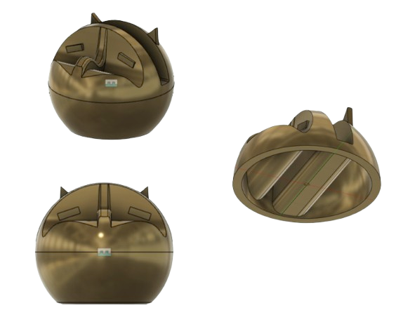
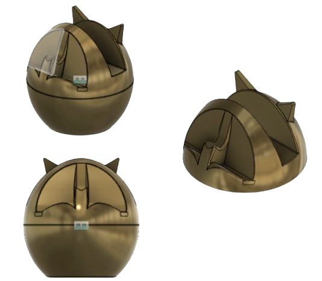
Manufacturing & fabrication
3D printing, sand, and molten metal
Manufacturing began by 3D printing the CAD designs for use as sand casting moulds. A wooden runner system was fabricated to channel molten metal into the mould silhouette. The runner was cut on a bandsaw and refined with a spindle sander to achieve the correct angles for consistent metal flow.
3D print casting patterns
CAD models 3D printed to serve as the positive patterns for the sand mould — one per component per critter
Fabricate wooden runner system
Runner cut on bandsaw and refined with spindle sander. The runner channels molten metal from the pour cup into the mould cavity at the correct angles for consistent flow
Ram up sand mould
~50 pounds of sand sifted and compacted tightly around the pattern and runner. The cope and drag were separated to reveal the cavity, then the 3d printed parts were pulled carefully to avoid tearing.
Pour molten metal
Molten bronze and aluminium were poured into the prepared moulds. The parts were allowed to cool before breaking out of the sand
65+ hours of hand sanding
Due to the organic curved forms, mechanical sanding tools couldn't reach all surfaces. Every face was finished by sanding entirely by hand using files and multiple grits of sandpaper
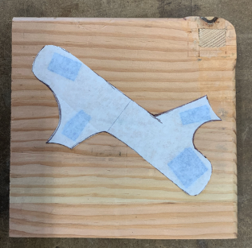
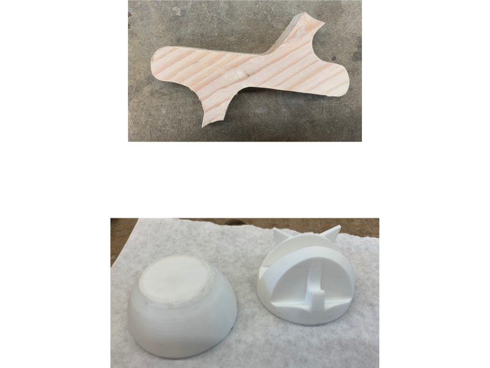

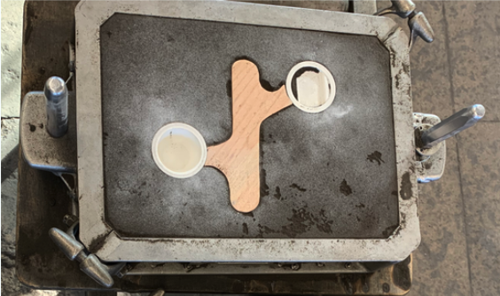
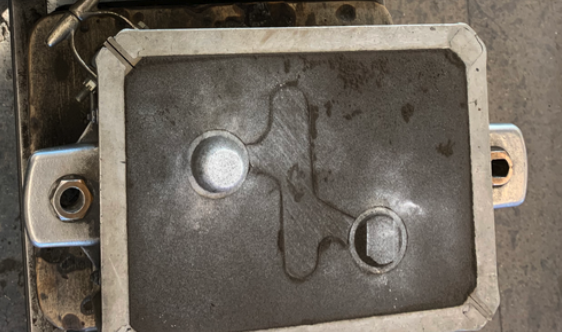
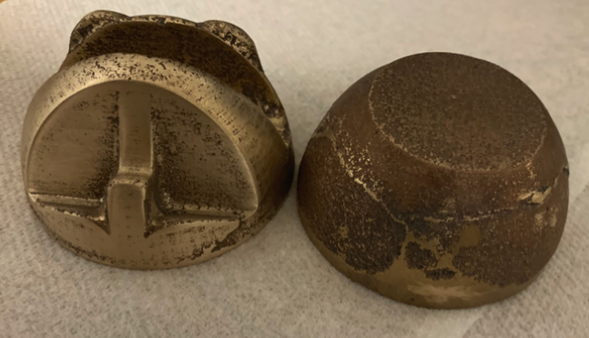
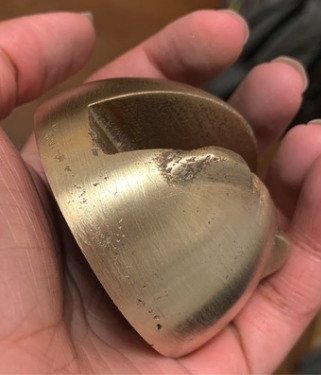
Final result
The finished critters
Two critters, one bronze, one aluminium, each consisting of a top and base that lift apart to hold glasses or small trinkets. The organic forms required entirely hand-finishing, giving each piece a slightly unique surface quality that reflects the labour involved.

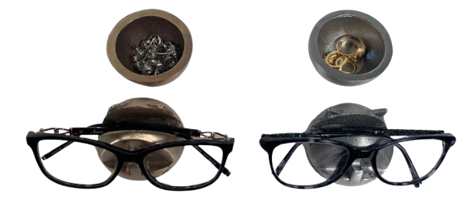